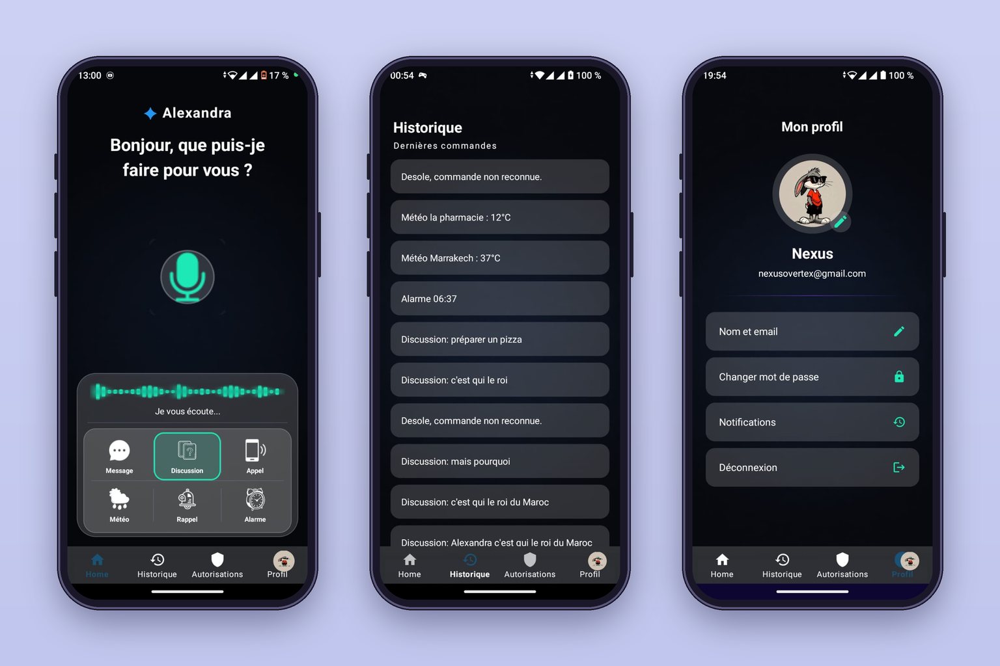
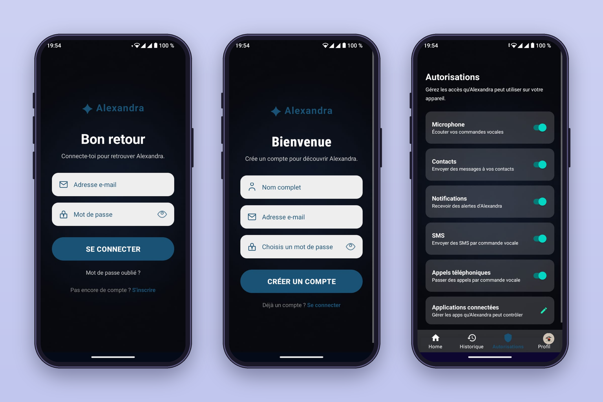

Abschlussprojekt
Alexandra — KI-Sprachassistent
Zeitraum2026
ArtAbschlussprojekt
Android-Sprachassistent mit Sprachsteuerung und KI-gestützter Kommunikation. Die Anwendung verarbeitet Sprachbefehle und kann verschiedene Aktionen auf dem Smartphone ausführen — für sensible Aktionen wurde ein Bestätigungssystem integriert. Zusätzlich entwickelte ich einen webbasierten Verwaltungsbereich und arbeitete mit verschiedenen APIs und Datenverwaltung.
KotlinJavaOpenAI APIFirebasePHPJavaScript
Highlights
- Sprachsteuerung und Verarbeitung von Sprachbefehlen.
- KI-gestützte Kommunikation über die OpenAI API.
- Ausführung verschiedener Aktionen auf dem Smartphone.
- Bestätigungssystem für sensible Aktionen.
- Webbasierter Verwaltungsbereich mit PHP und JavaScript.
Was ich dabei gelernt habe
- Entwicklung einer Android-Anwendung.
- Einbindung externer APIs und Datenverwaltung.
- Absicherung sensibler Aktionen durch Bestätigung.
- Zusammenspiel von App, Backend und Web-Oberfläche.